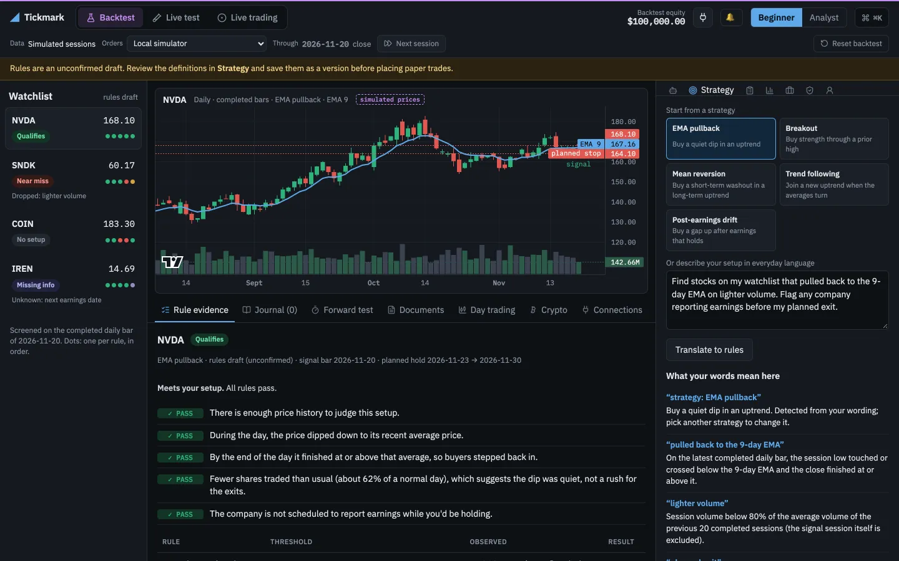
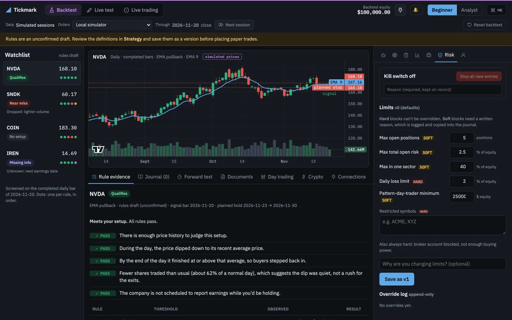
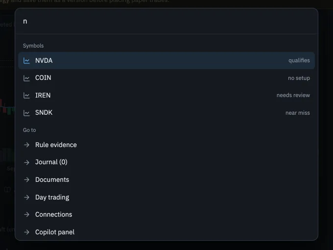
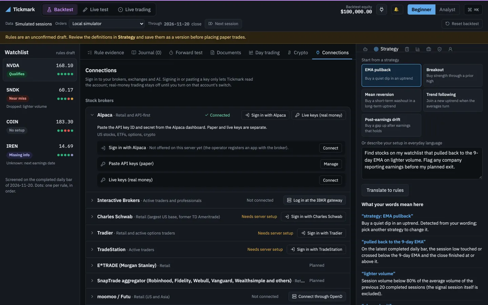

A trading desk that shows its reasons.
Write your setup in plain English and Tickmark turns it into rules you can read. Every candidate comes with the evidence behind it, every order passes risk checks first, and every trade lands in a journal that says what you knew and what happened next.
Open Tickmark Open to everyone: look around as a guest on real prices, paper-trade, and create an account when you want to connect a broker. The free server sleeps when idle, so the first visit can take about a minute.

Test the idea before it costs anything.
Three workspaces, each with its own record. Switching never deletes the others.
-
No money
Backtest
Simulated sessions you step through one at a time, historical checks of each strategy, and replays of past trading days, bar by bar with no lookahead.
-
No money
Live test
Real completed market bars and paper orders: a forward test of your rules, run on the local simulator or a broker's paper account.
-
Real money
Live trading
Real orders, only on accounts you switched on one at a time, with the ticker typed to confirm every order.
Why it qualified, in numbers you can check.
Each rule shows its threshold, what was observed, and pass or fail, worded for beginners or analysts. Five swing strategies (EMA pullback, breakout, mean reversion, trend following, post-earnings drift) and two intraday ones (VWAP reclaim, opening-range breakout) share one engine, so a backtest, the live screen and the journal can't disagree.
Before an order goes out, the risk engine checks position count, portfolio heat, sector concentration, the daily loss limit, the pattern-day-trader rule and a restricted list. Overrides need a written reason and are logged for good.

A copilot that drafts. You decide.
Ask in plain English: what qualifies today, whether a stop makes sense, how your crypto and stock positions add up. The copilot answers from the same tools the app uses, so every number it quotes comes from your data.
- It can draft rule changes, risk limits, orders and exits; nothing happens until you click.
- It can't place, cancel or close an order, change keys, or touch the kill switch.
- Sign in and pick Claude, GPT or Gemini: like an IDE copilot's free tier, each signed-in user gets a monthly allowance, no API key needed.
- Want more? Add your own Claude, OpenAI or Gemini key for unlimited use, or use the free open models the server hosts, such as Google Gemma 4, Qwen 3.5 and a small OpenAI gpt-oss.
- Ask the AI to research a strategy for your watchlist: it explains its evidence and drafts rules you can read and apply.
- Install it as an app on your phone or computer: its own window and icon, and a bottom tab bar on phones.
- Focus mode for ADHD-friendly trading days: one next step at a time, bigger text, no extra motion, a 25-minute timer and optional calm background sound.
- Or use Tickmark inside Claude as an MCP connector, signed in with OAuth, on your own Claude plan.

Your brokers and exchanges, with honest labels.
Connecting only lets Tickmark read an account. Trading real money needs that account's own switch.
| Venue | How it connects | What works |
|---|---|---|
| Alpaca | API keys, or OAuth once the server registers an app | Paper and live trading |
| Interactive Brokers | Client Portal Gateway login | Paper and live trading |
| OKX, Coinbase, Kraken | Exchange API key | Spot crypto, per-account switch |
| Robinhood | Official crypto API | Crypto only |
| Binance.US, Bybit, moomoo / Futu | API key or OpenD gateway | Read balances and positions |
| Phantom | Public address, watch-only | Read-only, never a seed phrase |
| Schwab, Tradier, TradeStation | OAuth sign-in | Needs an app registration |
| Fidelity, Webull, Robinhood stocks | No usable public trading API | Not possible directly |

Built so a mistake stays small.
Paper first. Every account starts on paper or read-only. Real money is switched on per account, by typing a confirmation.
A real kill switch. One click stops all new orders, everywhere.
Stops at the broker. Swing entries carry a stop leg, day trades go out as brackets, and anything still open is flattened at 15:55 ET.
Keys stay put. Broker keys live in the system keychain, or encrypted per user in the multi-user portal, and are never sent to the browser.
A journal you can't rewrite. The reasoning behind each entry is stored write-once; only the review note is editable.
Tested, and honest about the gaps. 318 automated tests run against fake brokers, and the README lists what has been checked against real services and what hasn't.